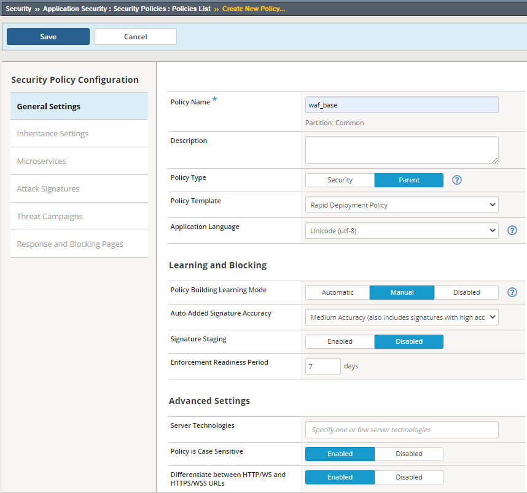

WAF - Identifying the level of protection required for applications > WAF - Identifying the level of protection required for applications Source |
Create WAF Parent Policy¶
In this lab you will create a top-level parent policy. This policy will set the base security settings for all policies that use this as the parent. This parent policy could be the base set of security requirements for all applications or a set of applications with a set of common security requirements (ie. eCommerce applications requiring PCI compliancy). In the parent policy, you will not only set the security requirements, but also what security features must be inherited, which features are optional and which security features can be define manually, to allow for customizing security policies for particular applications as needed.
Task 1 - Create a parent waf policy using info on table below:
| Policy Name | waf_base |
| Policy Type | Parent |
| Policy Template | Rapid Deployment Policy |
| Learning Mode | manual |
| Signature Staging | Disabled |
Select the Security->Application Security->Security Policies->Policies List page
Click Create
For Policy Name enter waf_base
For Policy Type select Parent
For Policy Template select Rapid Deployment Policy and click on OK at the warning.
For Learning Mode select Manual
Change Signature Staging to Disabled
Click Save in the upper left.
Once the policy is created you can define the Inheritance Settings. Select the waf_base policy, in the right panel click Inheritance Settings.
The Inheritance settings define parts of the policy a child policy can or cannot modify. Click on the Help tab in the left hand menu bar to see the definitions of the three settings, Mandatory, Optional and None. Click on the ? next to the policy item to see its purpose.
{kind=link}
Configure the Inheritance settings as shown on the image below, and then click Save and then Apply Policy in the upper right.
{kind=link}
Note
Beginning in BIG-IP ASM 13.0.0, you can create a parent security policy and have child security policies refer to it (layered policies). A parent security policy defines common Policy Section elements and settings that provide baseline protection for your environment and are inherited by all child policies attached to it. You identify the elements and settings that can be modified in child security policies and those that are mandatory and cannot be modified. When you modify elements and settings in the parent security policy, the system rapidly applies them to all attached child policies.